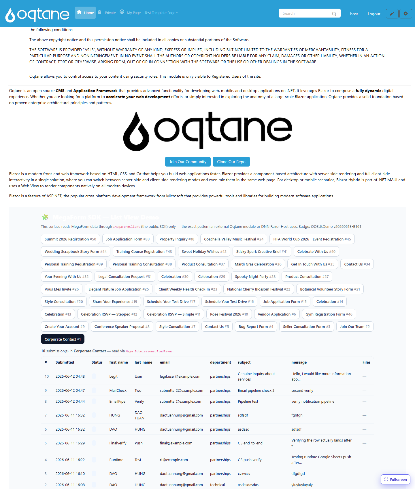
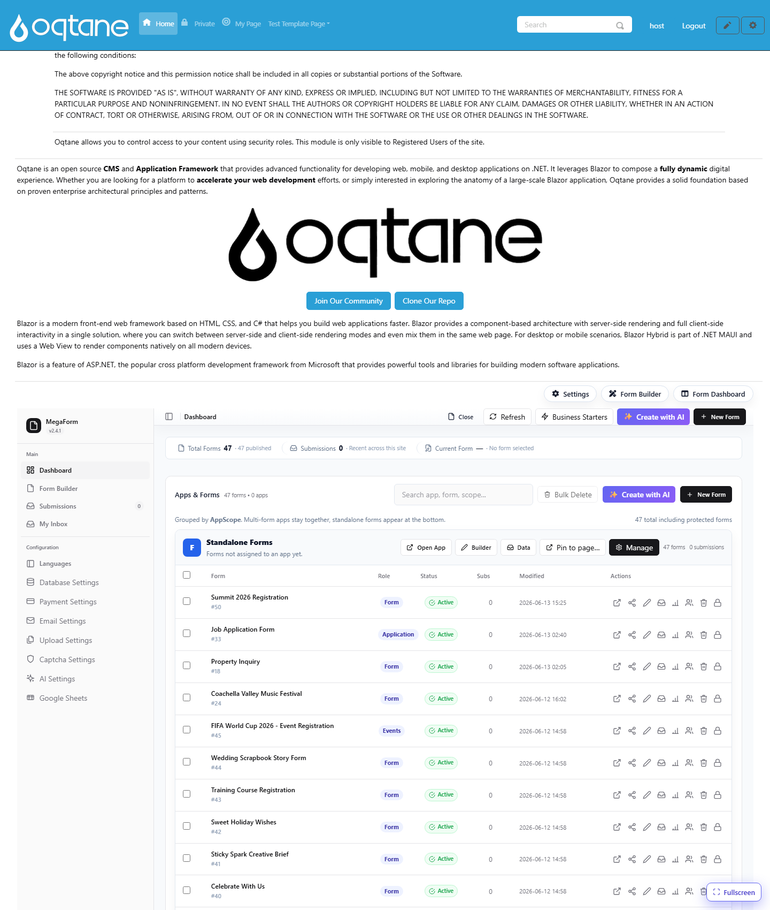

Consumer — Oqtane (Blazor)
On Oqtane, the SDK is consumed by constructor/@inject injection of IMegaFormClient. This
is the recommended pattern for any DI host.
This page documents the live demo that ships with MegaForm: a Blazor component that reads forms,
submissions, and files through only IMegaFormClient, and renders a list view with download
links. It opens by URL at /?mfpanel=sdkdemo&formId=N.

1. Register the SDK
The MegaForm Oqtane server registers the repositories, storage, and the SDK in its
IServerStartup:
services.AddScoped<IFormRepository, EfFormRepository>();
services.AddScoped<ISubmissionRepository, EfSubmissionRepository>();
services.AddScoped<MegaForm.Core.Interfaces.IFileRepository, EfFileRepository>();
services.AddScoped<IStorageService, OqtaneStorageService>();
MegaFormSdkServiceCollectionExtensions.AddMegaFormSdk(services);
2. Inject it into a component
@inject MegaForm.Sdk.IMegaFormClient Mega
@using MegaForm.Sdk
@code {
[Parameter] public int PortalId { get; set; }
private List<FormDto> _forms = new();
private List<SubmissionDto> _rows = new();
protected override async Task OnInitializedAsync()
{
var scope = new MegaFormScope { PortalId = PortalId };
var formsPage = await Mega.Forms.ListFormsAsync(new FormQuery { PageSize = 100 }, scope);
_forms = formsPage.Items.ToList();
var page = await Mega.Submissions.FindAsync(
new SubmissionQuery { FormId = 1, PageSize = 100 }, scope);
_rows = page.Items.ToList();
foreach (var s in page.Items)
{
var files = await Mega.Files.ListForSubmissionAsync(s.SubmissionId, scope);
// keep files keyed by s.SubmissionId for rendering the download column
}
}
}
Important
MegaForm.Sdk.FormDto/SubmissionDto can collide with the Oqtane module's own
MegaForm.Oqtane.Shared.Models types of the same name. Fully-qualify the SDK types
(MegaForm.Sdk.FormDto) in your @code block to avoid CS0104 ambiguous-reference errors.
3. Render the list view
<table>
<thead><tr><th>#</th><th>Submitted</th><th>Status</th><th>Files</th></tr></thead>
<tbody>
@foreach (var s in _rows)
{
<tr>
<td>@s.SubmissionId</td>
<td>@s.SubmittedOnUtc.ToString("yyyy-MM-dd HH:mm")</td>
<td>@(s.Status ?? "new")</td>
<td>
@foreach (var file in FilesFor(s.SubmissionId))
{
<a href="@($"/api/MegaForm/SdkDemo/Download?submissionId={s.SubmissionId}&fileId={file.FileId}")">
⬇ @file.FileName
</a>
}
</td>
</tr>
}
</tbody>
</table>
4. The download endpoint
A controller action streams the file through the SDK (see File Download):
[HttpGet("SdkDemo/Download")]
[Authorize(Roles = RoleNames.Admin)]
public async Task<IActionResult> SdkDemoDownload(int submissionId, int fileId)
{
var scope = new MegaFormScope { PortalId = _tenantManager.GetAlias().SiteId };
var content = await _sdk.Files.OpenAsync(submissionId, fileId, scope);
return content is null ? NotFound()
: File(content.Content, content.ContentType, content.FileName);
}
Verified
This demo was live-verified on Oqtane: 47 forms listed, 10 submissions of form #1 rendered
with parsed field columns, and a seeded file downloaded end-to-end (HTTP 200, text/plain,
Content-Disposition: attachment). The four core MegaForm surfaces (home form, dashboard,
submissions, builder) remained intact — confirming the SDK addition is non-invasive.
